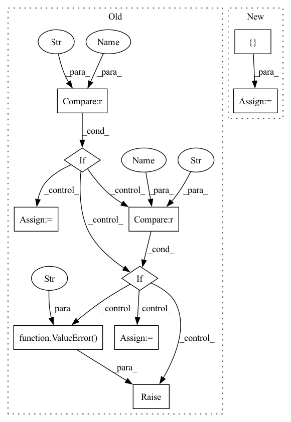

Pattern ID :15585
Before Change
loss_instance_l = loss_class_l()
loss_instance_r = loss_class_r() if not isinstance(loss_class_r, int) else loss_class_r
if op == "sum" :
mixed = loss_instance_l + loss_instance_r
sign = "+"
elif op == "mul":
mixed = loss_instance_l * loss_instance_r
sign = "*"
elif op == "div" :
mixed = loss_instance_l / loss_instance_r
sign = "/"
elif op == "pow":
mixed = loss_instance_l ** 2
sign = "**"
else:
raise ValueError("Unrecognized op" )
weights = (torch.ones(n_samples, n_assets) / n_assets).to(device=y_dummy.device, dtype=y_dummy.dtype)
losses = mixed(weights, y_dummy)After Change
true_tensor = python_operator(loss_instance_l(weights, y_dummy),
loss_instance_r(weights, y_dummy) if not r_is_constant else loss_class_r)
sign = { "add": "+", "truediv": "/", "mul": "*", "pow": "**"} [op]
mixed_tensor = mixed_loss(weights, y_dummy)
In pattern: SUPERPATTERN
Frequency: 4
Non-data size: 10
Instances Fragment ID: 52819109
Project Name: jankrepl/deepdow
Commit Name: cd0fa7772131cebf9a6abfcdd09474b1a20c4fc8
Time: 2020-06-22
Author: jankrepl@yahoo.com
File Name: tests/test_losses.py
M Class Name: TestAllLosses
N Class Name: TestAllLosses
M Method Name: test_arithmetic(4)
N Method Name: test_arithmetic(4)
M Parent Class:
N Parent Class:
M File Name: tests/test_losses.py
N File Name: tests/test_losses.py
M Start Line: 205
M End Line: 235
N Start Line: 207
N End Line: 237
Before Change
loss_instance_l = loss_class_l()
loss_instance_r = loss_class_r() if not isinstance(loss_class_r, int) else loss_class_r
if op == "sum" :
mixed = loss_instance_l + loss_instance_r
sign = "+"
elif op == "mul":
mixed = loss_instance_l * loss_instance_r
sign = "*"
elif op == "div" :
mixed = loss_instance_l / loss_instance_r
sign = "/"
elif op == "pow":
mixed = loss_instance_l ** 2
sign = "**"
else:
raise ValueError("Unrecognized op" )
weights = (torch.ones(n_samples, n_assets) / n_assets).to(device=y_dummy.device, dtype=y_dummy.dtype)
losses = mixed(weights, y_dummy)After Change
true_tensor = python_operator(loss_instance_l(weights, y_dummy),
loss_instance_r(weights, y_dummy) if not r_is_constant else loss_class_r)
sign = { "add": "+", "truediv": "/", "mul": "*", "pow": "**"} [op]
mixed_tensor = mixed_loss(weights, y_dummy)
Fragment ID: 52819174
Project Name: jankrepl/deepdow
Commit Name: cd0fa7772131cebf9a6abfcdd09474b1a20c4fc8
Time: 2020-06-22
Author: jankrepl@yahoo.com
File Name: tests/test_losses.py
M Class Name: TestAllLosses
N Class Name: TestAllLosses
M Method Name: test_arithmetic(4)
N Method Name: test_arithmetic(4)
M Parent Class:
N Parent Class:
M File Name: tests/test_losses.py
N File Name: tests/test_losses.py
M Start Line: 205
M End Line: 235
N Start Line: 207
N End Line: 237
Before Change
if input_image_type == "pt":
input_image = image
elif input_image_type == "np" :
input_image = image.cpu().numpy().transpose(0, 2, 3, 1)
elif input_image_type == "pil" :
input_image = image.cpu().numpy().transpose(0, 2, 3, 1)
input_image = VaeImageProcessor.numpy_to_pil(input_image)
else:
raise ValueError(f"unsupported input_image_type {input_image_type}." )
if output_type not in ["pt", "np", "pil"]:
raise ValueError(f"unsupported output_type {output_type}")
After Change
generator = torch.manual_seed(seed)
else:
generator = torch.Generator(device=device).manual_seed(seed)
inputs = {
"prompt": "A painting of a squirrel eating a burger",
"image": image,
"generator": generator,
"num_inference_steps": 2,
"guidance_scale": 6.0,
"output_type": "numpy",
}
return inputs
def test_stable_diffusion_img2img_default_case(self):
device = "cpu" // ensure determinism for the device-dependent torch.Generator Fragment ID: 52819107
Project Name: huggingface/diffusers
Commit Name: a7f25b4a881c0835980e2a3db5fe09bfc4ab2dc0
Time: 2023-05-01
Author: yixu310@gmail.com
File Name: tests/pipelines/stable_diffusion/test_stable_diffusion_img2img.py
M Class Name: StableDiffusionImg2ImgPipelineFastTests
N Class Name: StableDiffusionImg2ImgPipelineFastTests
M Method Name: get_dummy_inputs(3)
N Method Name: get_dummy_inputs(5)
M Parent Class: unittest.TestCase,PipelineLatentTesterMixin,PipelineTesterMixin
N Parent Class: unittest.TestCase,PipelineTesterMixin
M File Name: tests/pipelines/stable_diffusion/test_stable_diffusion_img2img.py
N File Name: tests/pipelines/stable_diffusion/test_stable_diffusion_img2img.py
M Start Line: 99
M End Line: 126
N Start Line: 105
N End Line: 117
Before Change
for label_id in torch.unique(self.labels_buffer):
label_mask = (self.labels_buffer==label_id).to(torch.float)
probs_per_label = probs
if score_fct == "llr" :
s = self._log_likelihood_ratio(probs_per_label, label_mask, normalize)
elif score_fct == "ce" :
s = self._cross_entropy(probs_per_label, label_mask, normalize)
else:
raise ValueError(f"Score function "{score_fct}" not implemented" )
sorted_ids = torch.argsort(s, descending=True)[:words_per_label]
label_words_ids.append(sorted_ids.cpu().numpy().tolist())
return label_words_ids
After Change
scores = self.probs_buffer[self.labels_buffer==label_id].mean(axis=0).cpu().numpy()
kept = []
for i in np.argsort(-scores):
word = self.tokenizer.convert_ids_to_tokens([ i Fragment ID: 52819325
Project Name: thunlp/openprompt
Commit Name: 35f140a0928724204ab887f5ed0d45d469aecc8b
Time: 2021-10-23
Author: yl-chen17@mails.tsinghua.edu.cn
File Name: openprompt/prompts/prompt_generator.py
M Class Name: VerbalizerGenerator
N Class Name: VerbalizerGenerator
M Method Name: _get_top_words(1)
N Method Name: _get_top_words(5)
M Parent Class:
N Parent Class:
M File Name: openprompt/prompts/prompt_generator.py
N File Name: openprompt/prompts/prompt_generator.py
M Start Line: 309
M End Line: 325
N Start Line: 308
N End Line: 318
Before Change
f"Model type {model_type} not implemented yet. Available model types [lstm, transformer]"
)
if optimizer_name == "SGD" :
optimizer = optim.SGD(
model.parameters(), lr=learning_rate, momentum=0.9, nesterov=True
)
elif optimizer_name == "Adam" :
optimizer = optim.AdamW(model.parameters(), lr=learning_rate, eps=1e-04)
else:
raise ValueError(
f"Optimizer {optimizer_name} not implemented. Available optimizers: SGD, Adam"
)
scheduler = optim.lr_scheduler.ReduceLROnPlateau(
optimizer, verbose=True, patience=scheduler_patience, factor=0.5
After Change
if dropout_images_prob is None:
dropout_images_prob = [ 0.0, 0.0, 0.0, 0.0, 0.0 Fragment ID: 52819355
Project Name: ikergarcia1996/self-driving-car-in-video-games
Commit Name: a1ab4ad40dbe62c5f2084ead328936bab9bdde02
Time: 2021-09-10
Author: igarciaf896@gmail.com
File Name: train.py
M Class Name: AnonimousClass
N Class Name: AnonimousClass
M Method Name: train_new_model(30)
N Method Name: train_new_model(34)
M Parent Class:
N Parent Class:
M File Name: train.py
N File Name: train.py
M Start Line: 372
M End Line: 531
N Start Line: 96
N End Line: 203